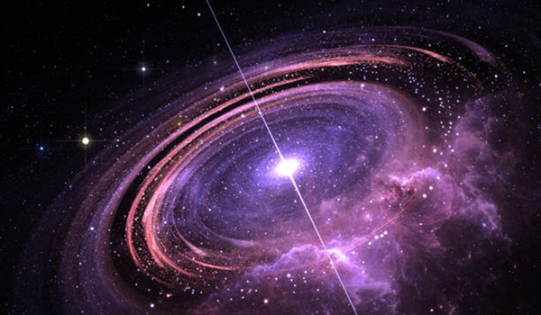

Bintang neutron adalah sisi padat dari bintang nafis yang mengalami ledakan supernova. Ketika inti bintang runtuh, tekanan gravitasi memaksa proton dan elektron bergabung membentuk neutron, sehingga tercipta objek dengan kepadatan luar biasa.
Satu sendok trh mentari dari bintang neutron diperkiraan memiliki massa seitar 1 miliar ton di Bumi - gamaran betapa esktremnnya kepadatan ini. Struktur internal bintang neutron masih menjadi topik pennelitian intensif.
Bintang neutron juga dikenal karena medan magnetnya yang kuat dan rotasi cepat. Beberapa bintang neutron yang memancarkan pulsa radio disebut pulsars. yang berputar ratusan kali per detik dan menghasilakn sinyal periodik yang dapat dideteksi oleh teleskop radio.
Studi bintang neutron menyediakan wawasan tentang fisika materi dalam kondisi tekanan dan densitas yang tidak mungkin direplikasi di laboratorium Bumi. Mereka juga menjadi laboratorium alami untuk mempelajari hukum relativitas umum.
Interaksi bintang neutron dalam sistem biner dapat manghasilkan pristwa spektakuler seperti penggabungan (merger) yang melepaskan gelombang gravitasi dan unsur berat melalu proses r-proces nucleosynthesis.
Observesi multi - messenger - kombinasi sinyal gelombang gravitasi, cahaya, dan sinyal elektromagnetik lainnya - telah mengubah pemahaman kita tentang neutron akhir - akhir ini.
Pengukuran massa. radius dan perilaku bintang neutron membantu membatasi persamaan keadaan materi nuklir. Penelitia ini menghubungkan astrofisika dengan fisika partikel pada skala exstream.
Kesimpulannya, bintang neutron adalah jendela ke kondisi exstrem di alam semesta dan terus memicu pertanyaan mendasar tentang fisika, materi, dan evolusi bintang.
